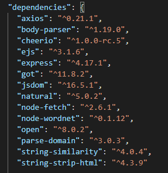
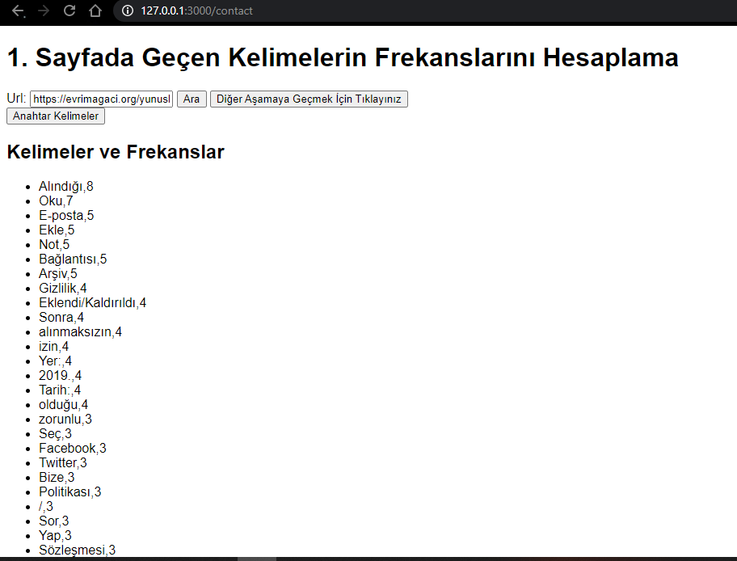
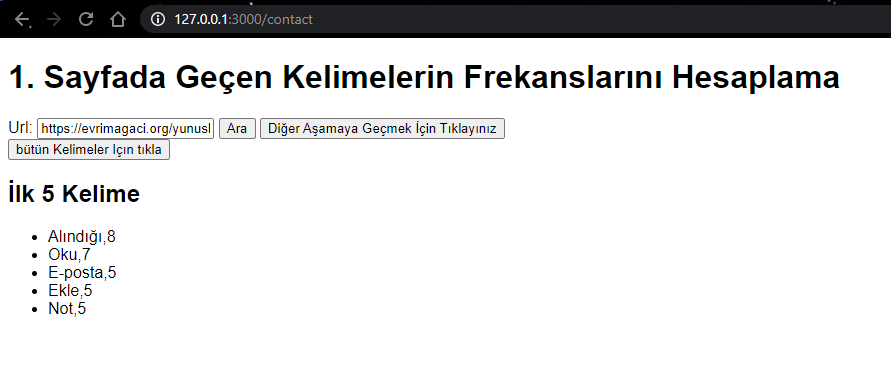
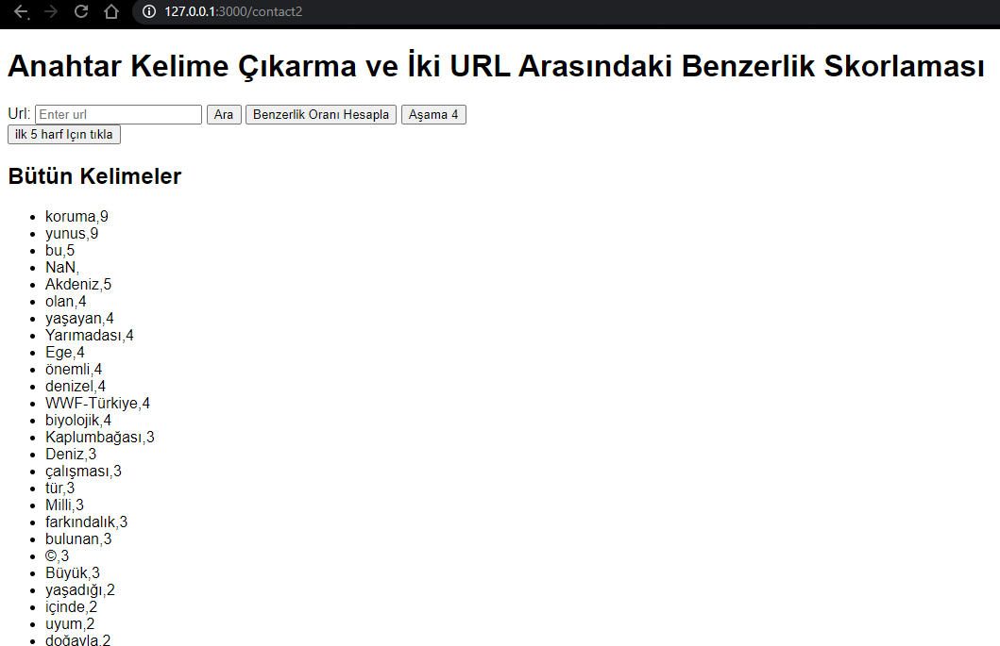
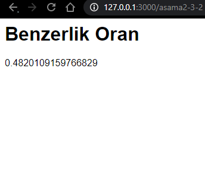
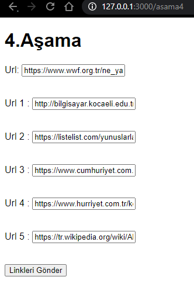
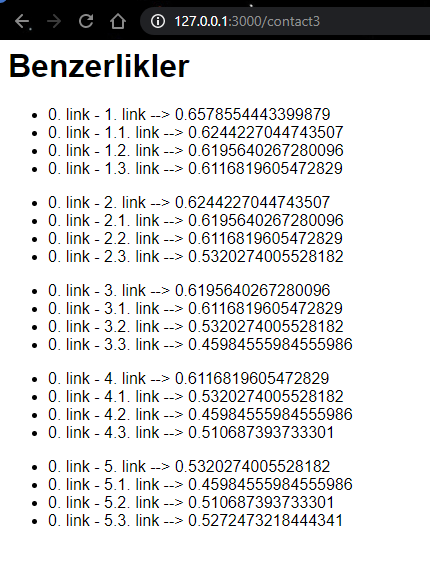

<!DOCTYPE html>
<html lang="en">
<head>
    <title>RAPOR</title>
    <link rel="stylesheet" href="rapor.css">
</head>
<body>
    <h1 style="text-align: center;"> Web İndeksleme Uygulaması Projesi</h1>
    <h4 style="text-align: center;"> Batuhan Özdemir-Zeynep Gökçe Can </h4>
    <h5 style="text-align: center;">180201158-180201082</h5>  
    <ul>
        <li>ÖZET</li>
        <p>Proje başlarken öncelikle java script temeli, html ve css yazım kurallarını araştırdık. Projemizde bize yardımcı olacak dokümanlardan ara yüz kullanımını öğrendik.
            1.aşama için temel bir html kodu oluşturup linkimizi aldık ve en çok tekrar eden kelimeleri ve ilk 5 kelimeyi görüntüledik
            Daha sonra 2 link arasındaki benzerlik oranlarını hesaplayıp bunları ekrana bastırdık. Görüntüleme için .ejs formatını kullandık.
            Algoritmalarımızı ise app.js formatında oluşturduk
            Daha sonra projemizde 4. Aşama olan alt linkleri bulma ve diğer linklerle karşılaştırma kısmına geçtik.
            Bu kısımda alt linklerin diğer linklerle olan akrabalıklarını bulup 0-1 arasında bir puanlama yaptık.
            Beşinci ve son aşama için gereğinden fazlasıyla çalıştık ancak javascript kodunda semantik analiz ile ilgili bir şey bulamadık.
            NOT: Semantik analiz İngilizcede tam olarak karşılığını bulamadık ve bulduğumuz sonuç genel olarak Sentiment analiz oldu. Bu analiz ise çoğunlukla kullanılan kelime ve cümle formlarındaki duyguları bulmakta.
            Sonuç olarak javascript düzeninde özellikle de Türkçe kelimeleri yakın/eş anlamlı şekilde bulabileceğimiz bir algoritma kaynağı bulamadık.
            İngilizce sözlük biçiminde eş anlamlı kelimeleri bulabileceğimiz bir kaynak bulduk lakin o da sizin istediğiniz karşılamıyordu.
             Kendi denemelerimizde de tam olarak istediğimizi sağlayamadığımız için 5.aşamayı çıkarttık.
            Son olarak ise rapor kısmını hallettik, bug ve hataları çözdük. Projemizi son haline getirdik.</p>
            <b></b> <b></b>
        <li>GİRİŞ</li>
        <p>Bu projede amaç verilen bir URL’deki web sayfa içeriğine göre diğer birden fazla web sayfasını benzerlik bakımından indeks sıralayan web tabanlı bir uygulama geliştirmektir. 
        </p>
        <li>TEMEL BİLGİLER</li>
        <p>Projeyi javascript programlama dili ve web tabanlı html ,css dil formatlarını kullanarak gerçekleştirdik Visual Studio Code geliştirme ortamında projeyi oluşturduk.   Programı yaparken javascript ve node.js dilinin kullanıcılara sunduğu fonksiyonlar ve metotlardan yararlandık.
        </p>
        <li>TASARIM</li>
        <p></p>
        <li>GENEL YAPI</li>
        <p>Kullanıcı Kısmı </p>
        <p> 
            Program ilk çalıştırıldığında kullanıcı web sayfasına ulaşır ve karşısına ilk aşama çıkar. İlk aşamada bir link girdikten sonra buradaki anahtar 5 kelimeyi bulabilir. Daha sonra 2.aşamaya geçilir ve iki link birbiri ile kıyaslanır kullanıcı sonuçları aldıktan sonra 4. Aşamaya geçer.
            4.aşamada ise kullanıcı bir link girer ve karşılaştıracağı 5 linki daha girer. İlk linkin alt linkleri bulunur ve bu linkler arasında skor sonuçları yapılır.</p>
    
        </p>
        <p> Kod Kısmı</p>
        <p>     
        Projede ilk olarak app.js ,asama1.ejs ve asama1.css dosyalarını oluşturduk. Ejs uzantılı dosyada temel html kodlamalarını butonları , css uzantılı dosyada temel css bilgilerini oluşturduktan sonra app.js de 1.aşama için bizden istenilen kelimelerin tekrar sayılarını bulduk.
        Ana mantık olarak projede aldığımız linkteki html kodlarından body kısmını alıp bir text dosyasına gönderdik. 
        Daha sonra bu txt dosyasını okuyup bir dizi haline dönüştürdük. Daha sonra ise okuduğumuz bu diziden tekrar sayılarını bulduk ve en çok tekrar eden 5 kelimeyi de bulduk. Bağlaçları algılaması için ise ayrıca bir kod bulundurduk.
        Daha sonra 2.html sayfamızı oluşturduk ve 2 linkin birbiri arasındaki benzerliklerini kıyaslayan kod bloğunu oluşturduk. 2.ve 3. Aşamaları aynı html kısmında yazdırdık.
        Puanlamayı 0-1 arasında puanlama sisteminde yaptık ve birbiri ile eşdeğer(yakın) kelimelere göre puanlamasını sağladık.
        Daha sonra 4. Aşama için bir html sayfası oluşturup url’lerin girileceği ve karşılaştırılması için kullanılacağı butonları oluşturduk.
        4. aşama için önce alınan urlden gidilen alt urleri tek tek bir algoritma ile bulduk. Daha sonra ile bulduğumuz alt linkleri kullanıcının gireceği linkler ile karşılaştırmasının yapıp puanlama yapmasını sağlayan bir kod yazdık ve son haline getirdik.
        5.aşamayı özet kısmında anlattığım gibi sorunlar yüzünden halledemedik.
        Son olarak ise kodu son haline getirdik hataları düzelttik .
        </p>
        <p>Kod Bilgisi </p>
        <p>
        Programın tamamı kullanılan kütüphaneler, kendi yazdığımız fonksiyonlar ve main fonksiyonun içindeki kod kısımları da dahil olmak üzere toplam 523 satırdan oluşmaktadır. Toplamda 5 html sayfası ve bir aplikasyon oluşturan javascript dosyamız bulunmaktadır.
        </p>
        <li>KÜTÜPHANELER </li>
        <p>
        Bu kısımda projeme include ettiğimiz kütüphanelerin sadece birkaçı  bulunmakta: 
        <br>
        <br>
        
        </p>
        <li>KAYNAKÇA</li>
        <p>
            <a href="https://medium.com/@sumn2u/string-similarity-comparision-in-js-with-examples-4bae35f13968">https://medium.com/@sumn2u/string-similarity-comparision-in-js-with-examples-4bae35f13968</a>
            <br>
            <a href="ttps://www.gencayyildiz.com/blog/node-jsdebody-parser-modulu-ile-post-edilen-datayiyakalamak/">ttps://www.gencayyildiz.com/blog/node-jsdebody-parser-modulu-ile-post-edilen-datayiyakalamak/</a>
            <br>
            <a href="https://isagul.medium.com/javascriptte-async-await-kullan%C4%B1m%C4%B1-95be3d16b62a">https://isagul.medium.com/javascriptte-async-await-kullan%C4%B1m%C4%B1-95be3d16b62a</a>   
            <br>
            <a href="https://www.buraksenyurt.com/post/Levenshtein-Distance-Algoritmasi">https://www.buraksenyurt.com/post/Levenshtein-Distance-Algoritmasi</a>
            <br>
            <a href="https://stackoverflow.com/questions/3824208/how-to-get-all-the-urls-in-a-web-site-using-javascript">https://stackoverflow.com/questions/3824208/how-to-get-all-the-urls-in-a-web-site-using-javascript</a>
            <br>
            <a href="https://www.kindacode.com/article/how-to-get-all-links-from-a-webpage-using-node-js/">https://www.kindacode.com/article/how-to-get-all-links-from-a-webpage-using-node-js/</a>
            <br>
            <a href="https://www.w3schools.com/jsref/jsref_push.asp">https://www.w3schools.com/jsref/jsref_push.asp</a>
            <br>
            <a href="https://medium.com/swlh/how-to-generate-a-sitemap-xml-with-javascript-for-dynamic-page-urls-12d9537fd950">https://medium.com/swlh/how-to-generate-a-sitemap-xml-with-javascript-for-dynamic-page-urls-12d9537fd950</a>
            <br>
            <a href="https://www.w3schools.com/jsref/jsref_push.asp">https://www.w3schools.com/jsref/jsref_push.asp</a>
            <br>
            <a href="https://www.kindacode.com/article/how-to-get-all-links-from-a-webpage-using-node-js/">https://www.kindacode.com/article/how-to-get-all-links-from-a-webpage-using-node-js/</a>
            <br>
            <a href="https://www.yusufsezer.com.tr/node-js-url/">https://www.yusufsezer.com.tr/node-js-url/</a>
            <br>
            <a href="https://stackoverflow.com/questions/33761321/trigrams-comparison">https://stackoverflow.com/questions/33761321/trigrams-comparison</a>
        <br>
        </p>
        <li>PROJE ÇALIŞMA KISIMLARI</li>
        <p>
            
            <br><br>
            
            <br><br>
            
            <br><br>
            
            <br><br>
            
            <br><br>
            
            <br><br>
            
            <br><br>
        </p>
        </ul>
    
</body>
</html>